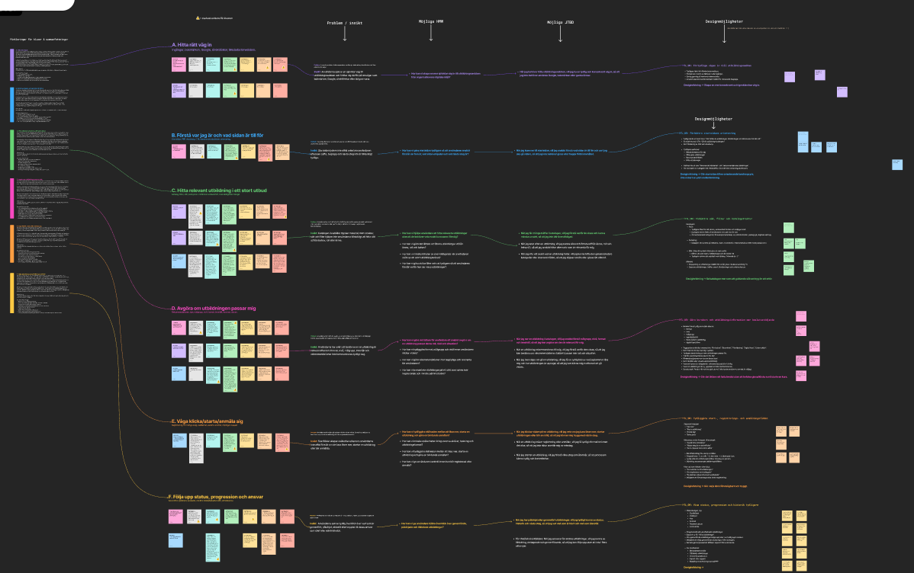

AcadeMedia: UX Design in a Confidential Project
A four-week UX collaboration with AcadeMedia, focused on user needs, workflows and design concepts while respecting project confidentiality.
UX/UI Designer
AcadeMedia
4 weeks
Figma
FigJam
Protected by
confidentiality

Working within confidentiality
The project involved a real organisational challenge, but not everything from the work can be shared. Here I focus on the methods, design thinking and lessons I can discuss publicly.

Understanding the work behind the screens
I focused on the people using the system, the tasks they needed to complete and the places where the workflow became difficult to follow. Research and mapping helped make those problems clearer.

From findings to interface ideas
The research informed flows and prototype concepts. My aim was to make the structure more straightforward, so people could focus on their task rather than work out where to go next.

A process I can share responsibly
The final solution is not shared here. I can, however, explain my approach to research, design decisions and collaboration without exposing protected project details.
Behind the Design
Showing the process, respecting the boundaries
The examples below focus on methods and design thinking. Specific internal information and the final deliverable remain outside this public case study.
User Testing

User testing helped reveal needs, friction in the workflow and possible improvements. This case study focuses on the method rather than the protected final deliverable.
Affinity Mapping

Grouping observations into themes helped us see the issues that came up more than once.
Heuristic Evaluation

I reviewed the interface against usability principles to find issues with structure, clarity and interaction.
Prototype Concept
Developing interface concepts in Figma, with confidential details kept out of this presentation.
Key Learnings
Working with confidentiality
Good communication also means knowing what should stay private. I can explain a design decision without showing every artefact.
Real stakeholder context
An idea has to work within an organisation’s needs and constraints, not only for an individual user.
Structured UX process
Clear documentation helped connect each design direction to the research behind it.
Reflection
What I took from the project
This project taught me to make my reasoning clear, even when the finished work cannot be shown in full.
It also made me more careful about documenting decisions and sharing work responsibly in a professional setting.